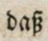

Level 2 and 3
In both black letter and antiqua texts, two forms of the lower case letter s can occur: the long-s (ſ, U+017F, LATIN SMALL LETTER LONG S) and the round s (s, U+0073, LATIN SMALL LETTER S). They are differentiated in the transcription.
The ligature of long-s and z is not to dissolve but to transcribe as ß (spoken sz). Exceptions and particularities are shown in the following table.
| Original | Explanation | Transcription |
|---|---|---|
 |
A long-s followed by a s is reproduced true to the original as ſs. | daſs |
 |
A long-s followed by a z is reproduced true to the original as ſſz. | hauſſzen |
|  | The ligature long-s + z is reproduced true to the original as ß. | daß |